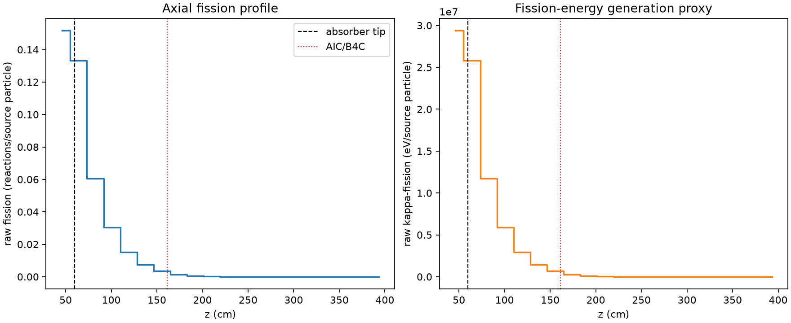
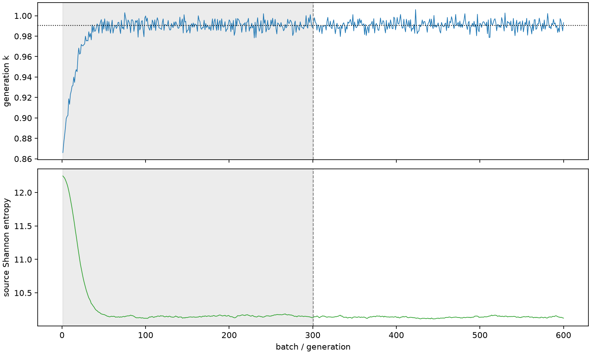

| field | value |
|---|---|
| experiment | V2-ADAPTIVE_01-0006 |
| k | 0.9906591795232895 |
| MC standard error | 0.00020367351871817407 |
| seconds | 928.6004711480055 |
| acceptance | not_assessed |
| convergence | review_required |
Completed is output integrity only; physical and statistical review required. Zero tallies do not prove zero production or zero uncertainty.
| diagnostic | value |
|---|---|
| geometric fuel voxels | 5280 |
| zero fission tally voxels | 1059 |
| low signal fuel voxels | 2408 |
| low signal fission share | 0.0001652129331341665 |
| low signal kappa share | 0.00016525284431978548 |
| important fission share | 0.9500298438995224 |
| previous filter included | 2872 |
| duration estimate s | 1562.5173488400023 |
| actual minus estimate s | -633.9168776919969 |
| fission relative MC error | statistics |
|---|---|
| all_geometric_fuel | {"voxels": 5280, "positive_mean_voxels": 4221, "zero_mean_voxels": 1059, "undefined_relative_error_voxels": 1059, "median": 0.05685275958435236, "p95": 0.8795636065425211, "maximum": 1.0000000000000002} |
| low_signal | {"voxels": 2408, "positive_mean_voxels": 1349, "zero_mean_voxels": 1059, "undefined_relative_error_voxels": 1059, "median": 0.5101967591634397, "p95": 1.0, "maximum": 1.0000000000000002} |
| important_95pct | {"voxels": 1182, "positive_mean_voxels": 1182, "zero_mean_voxels": 0, "undefined_relative_error_voxels": 0, "median": 0.006737410478363127, "p95": 0.013781958410980977, "maximum": 0.015843263010206266} |
| outside_previous_filter | {"voxels": 2408, "positive_mean_voxels": 1349, "zero_mean_voxels": 1059, "undefined_relative_error_voxels": 1059, "median": 0.5101967591634397, "p95": 1.0, "maximum": 1.0000000000000002} |
| kappa_fission relative MC error | statistics |
|---|---|
| all_geometric_fuel | {"voxels": 5280, "positive_mean_voxels": 4221, "zero_mean_voxels": 1059, "undefined_relative_error_voxels": 1059, "median": 0.05676853079427296, "p95": 0.8779056334143476, "maximum": 1.0000000000000002} |
| low_signal | {"voxels": 2408, "positive_mean_voxels": 1349, "zero_mean_voxels": 1059, "undefined_relative_error_voxels": 1059, "median": 0.5089817382383987, "p95": 1.0, "maximum": 1.0000000000000002} |
| important_95pct | {"voxels": 1182, "positive_mean_voxels": 1182, "zero_mean_voxels": 0, "undefined_relative_error_voxels": 0, "median": 0.006727095959657335, "p95": 0.013762181210320686, "maximum": 0.01582390342288149} |
| outside_previous_filter | {"voxels": 2408, "positive_mean_voxels": 1349, "zero_mean_voxels": 1059, "undefined_relative_error_voxels": 1059, "median": 0.5089817382383987, "p95": 1.0, "maximum": 1.0000000000000002} |
| axial bin | fission share | kappa-fission share |
|---|---|---|
| 1 | 0.37530737613469495 | 0.37526233181087637 |
| 2 | 0.32997622857008285 | 0.329981478387216 |
| 3 | 0.14971489718778946 | 0.1497344618527287 |
| 4 | 0.07501255831835209 | 0.07502256107182183 |
| 5 | 0.03752328188991215 | 0.03752842600769658 |
| 6 | 0.018533499279009297 | 0.01853598630734664 |
| 7 | 0.008520474622333869 | 0.008521762808542008 |
| 8 | 0.0032636666489403764 | 0.0032644362128130644 |
| 9 | 0.0012706971721897914 | 0.0012710179099193449 |
| 10 | 0.0005147074162217543 | 0.0005148371418185856 |
| 11 | 0.00022429626500611479 | 0.00022435264296438603 |
| 12 | 8.531588974159428e-05 | 8.533486741092857e-05 |
| 13 | 3.460813237193165e-05 | 3.461338811890585e-05 |
| 14 | 1.2636938413778124e-05 | 1.2640994651425069e-05 |
| 15 | 4.149927748621707e-06 | 4.152370578792534e-06 |
| 16 | 1.4013694746754432e-06 | 1.4020112522806708e-06 |
| 17 | 2.0423771668898839e-07 | 2.042142443184655e-07 |
| 18 | 0.0 | 0.0 |
| 19 | 0.0 | 0.0 |
| 20 | 0.0 | 0.0 |
Histories include the inactive-to-active transition at batch 300. kappa-fission approximates fission energy production, not total heat deposition.

